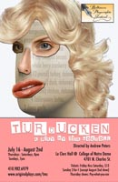
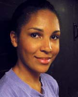
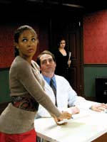
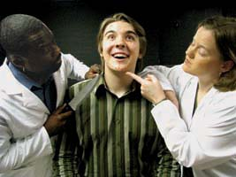
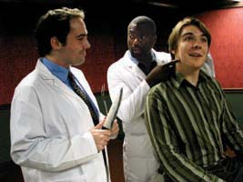
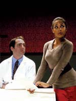
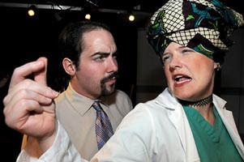
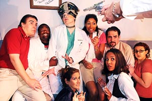

|
 |
 |
 |
 |
|
|
|

Poster graphic art by Andrew Peters 3300 x 5100 image @ 300 dpi |

Gloria Goodee (Lyndsay Webb) photo by Katie Bateman |
Chuck Binder (Alexander Scally) photo by Katie Bateman |
Stella Dora (Cristina Petrarca) |
|
Jeff Holliday (Adam Brooks) photo by Katie Bateman |
Brenda Holliday (Dana Woodson) photo by Philip Laubner |
Dr. Bennie Wang (Joseph Dunn) photo by Katie Bateman |
Dr. Martha (Joy Baldwin) photo by Katie Bateman |
|
Vivica Bogg (Nancy Dall) |

Lishka Von Shvonz (Ann-Marie Feild) |
Playwright (Lisa Hodsoll) |
Director (Andrew Peters) |
|

Gloria's offer to Chuck refused by Stella photo by Katie Bateman |

Dr.s Martha Wang discuss a little work on Jeff photo by Katie Bateman |
Chuck is put in a bind by Gloria, Lishka, Wang, and Stella photo by Katie Bateman |

Dr. Wang shows Chuck some costly cuts he'll make on Jeff photo by Katie Bateman |
|

Gloria makes Chuck an offer: how can he refuse? photo by Katie Bateman |

Dr. Martha snappily rejects Chuck's opinion photo by Philip Laubner |

Mrs. Von Shvonz knows how to command attention. Jeff, Wang, Dr. Martha, Brenda, Chuck, and Stella (back), Vivica & Gloria (front) photo by Philip Laubner |
No pictures yet
{kind=link}